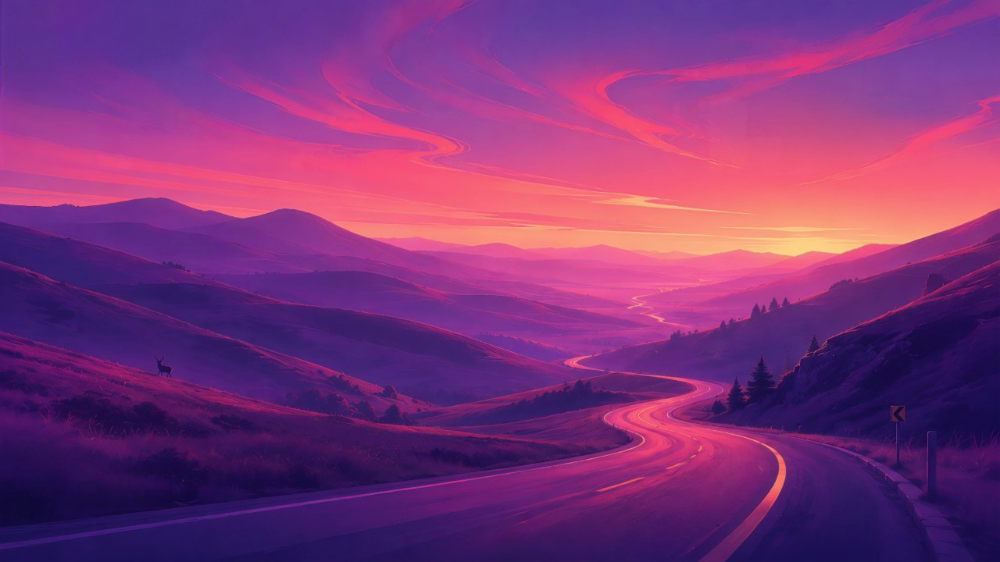

One key sets the Ghostty theme, the wallpaper on every Space, and the colors of Neovim, btop, bat and tmux. It can even follow light and dark mode on its own.
$ curl -fsSL https://kanishkk.xyz/oms | bash
Then run oms. macOS on Apple silicon or Intel.

Every theme from Omarchy, ported to Ghostty with a matching app icon.
Ghostty recolors as you move through the list. Quit and your theme comes back.
Each theme's own wallpapers, set on every Space and display at once.
Pick a day theme and a night theme with L and D. Your Mac switches them for you.
Neovim, btop, bat, tmux and the macOS accent color follow the theme.
oms rotate 30m moves to the next wallpaper on a timer.
f stars a theme, / filters, recent ones stay near the top.
Add your own pictures or folders to any theme.
$ oms # the picker (press ? for keys) $ oms apply tokyo-night 3 # theme + its 3rd wallpaper $ oms auto catppuccin-latte nord # follow light/dark mode $ oms rotate 30m # new wallpaper every 30 minutes $ oms apps on nvim btop bat tmux # theme other apps too $ oms wallpapers add nord ~/Pictures # bring your own $ oms config install --only font # parts of my Ghostty config $ oms self-update # get the latest oms
oms ships with the Ghostty config I use every day: FiraCode Nerd Font, a little transparency and blur, a cursor that leaves a smooth trail, and keybindings for splits and tabs. oms config install sets it up and keeps a backup of yours. You can also take just some of it: oms config install --only font,keybindings.
Smoother: instant previews, a strip of thumbnails, no freezing while applying, and a layout that fits small windows. New: undo (u), a light/dark filter (Tab), mouse support, oms doctor, shell completions, and oms now asks to update itself when a new version is out.
Light/dark switching, wallpaper rotation, Neovim/btop/bat/tmux themes, favorites, search, your own wallpapers, and config presets you can take in parts.
oms config install: my Ghostty config in one command.
Wallpapers now change on every Space, not just the current one.
Omarchy themes for Ghostty and matching wallpapers, from one TUI.